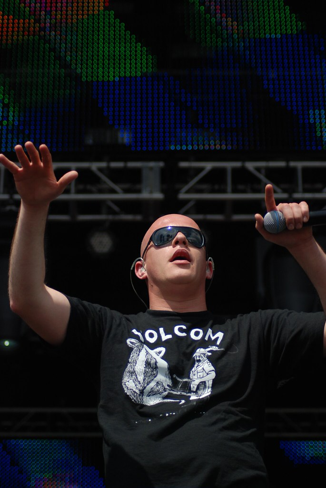

Om Infected Mushroom:
|Infected Mushroom er en israelsk duo bestående av Erez Eisen og Amit Duvdevani, i tillegg til enkelte gjesteartister. Opprinnelig spilte de musikk i sjangeren psykedelisk trance, men har på de siste albumene beveget seg bort fra sine røtter og hentet inspirasjon fra psykedelisk rock og heavy metal. Duoen har nådd internasjonale høyder med musikken sin, og er idag et av de mest kjente og anerkjente innenfor elektronisk musikk.
Erez Eisen
Erez Eisen ble født 8. september 1980 i Qiryat Yam , Israel. Han begynte klassisk musikalsk trening i ung alder, lærte å spille orgel i en alder av fire og studerte klassisk piano ved Haifa-konservatoriet fra han var åtte år. Eisen engasjerte seg i datastyrt musikk i en alder av 11 år, og begynte med Impulse Tracker og flyttet senere til mer avansert programvare for musikalsk komposisjon.
Amit Duvdevani
Amit Duvdevani ble født 7. november 1974 i Israel og har en lignende musikalsk bakgrunn som Eisen. Han begynte å spille klassisk piano i en alder av syv år og fortsatte å gjøre det i ni år. Deretter gikk han videre til heavy metal -musikk og punkrock . Duvdevani spilte keyboard og skrev det meste av materialet for Haifa punkrockband Enzyme han deltok på hans første trancefest i 1991.